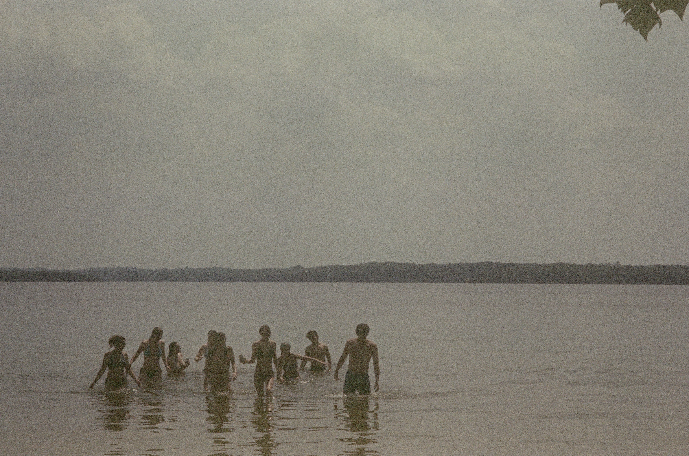
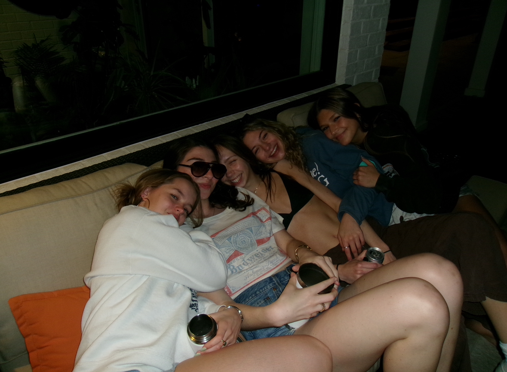
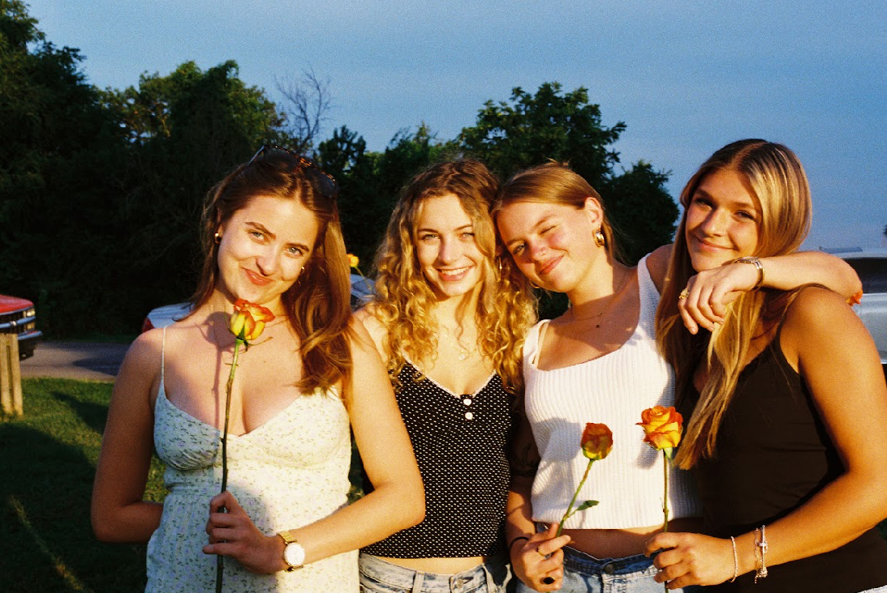
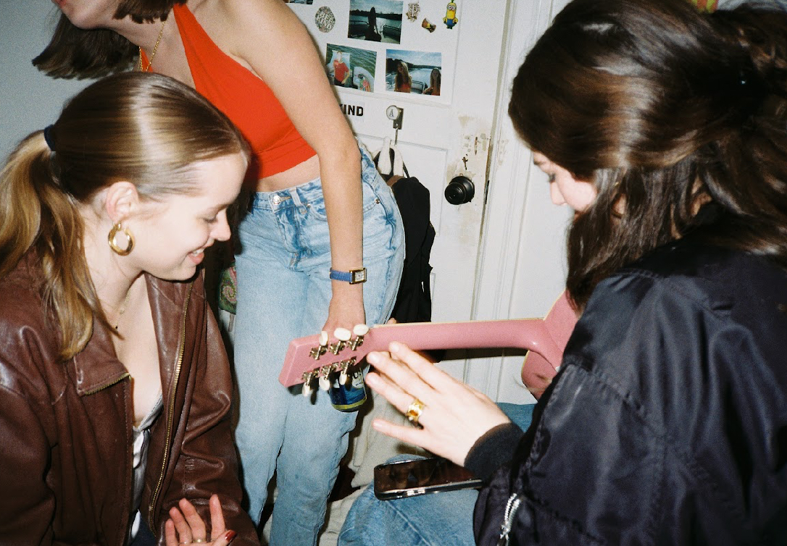

Walking outside labyrinthine
Over cracks along under the trees
I know this town grounded in a compass
Cardinal landed in the dogwood
I keep going over it, over and over
My steps iterate my shame
How come every outcome is such a comedown?
Lately afternoon with the shades drawn down
I kept saying I just wanted to see it
Saying, "What's wrong with that?"
Needle shaking out lines in the compass
Every outcome is such a comedown
I knew it when I saw it
So I did just what I wanted
So I go through with this
I knew happiness when I saw it
I saw your boyfriend at the port authority
It's a sort of fucked up place
Well, so I averted my stride on a quick one
He's coming back from going over to your place, huh?
I feel like I could forget about it
I feel like I can mellow out
I don't feel undone in a big way
There's nothing really bad to be upset about
But when I thought I was getting better
I woke up on the ground
An appointment, oh disappointment
A set back, oh another comedown
As if I needed a reminder
I do only what I wanna
So I go through with this
Walking out in the night—time springtime
Needling my way home
I saw Leah on the bus a few months ago
I saw some old friends at her funeral
My steps keep splitting my grief
Through these solipsistic moods
I should call my parents when I think of them
Should tell my friends when I love them
Maybe I should have gone out a bit more
And you guys are still in town
I got too caught up in my own shit
It's how every outcome is such a comedown
I knew it when I saw it
Oh, I did just what I wanted
So I go through with this
I knew happiness when I saw it
I saw it






